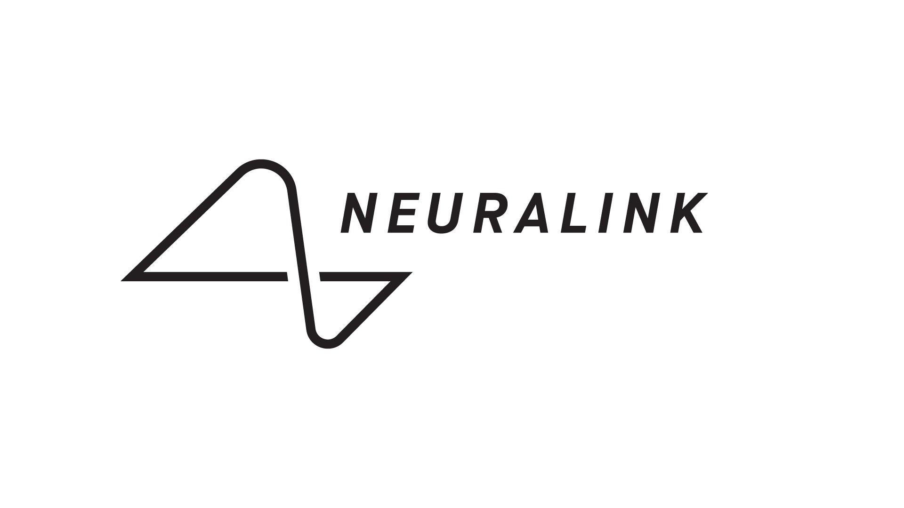

More people opting for the bubble suit as it's proven the most effective protection against the coronavirus
By
Thomas Anderson| November, 11, 2025 11:34am CST
As the COVID-21 pandemic hits its 75th variant people are growing tired of masks and some have opted for bubble suits. Reginald pictured in the bubble above says it makes him feel safer while also allowing him to show his face. This form of PPE is especially popular amongst the younger crowd.
As black market manipulation of Neuralinks becomes more accessible the company's decided to weed out compromised devices.
By
Maxo Kream| November, 10, 2025 10:19pm CST
It seems that everywhere you go people either have a Neuralink or are talking about getting one implanted. As the device becomes more established the jailbreaking industry seems to have risen along with it. It has now gotten to the point where we're seeing new replica devices for the device which is patented under the Neuralink corporation.